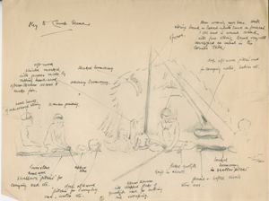

This symposium is organized in conjunction with the exhibition
Frontier Shores at Bard Graduate Center (April 22, 2016–September 18, 2016).
Frontier Shores explores social Darwinism, imperialism, cross-cultural contact, and identity in Oceania from the nineteenth through the mid-twentieth century. The exhibition showcases a wide selection of material to convey the ways in which colonial powers perceived those they controlled or sought to control, and the ways in which cultural exchange was realized in the material world.
Frontier Shores explores the idea that the material culture collected in the late nineteenth through the mid-twentieth century made false assumptions about native identity and civilization in order to justify domination. This exhibition deals with the notion of trade between European collectors and native peoples, incorporating the idea of the object as the frontier itself, but it also explores how anthropology was used by colonial powers to justify their control over the resources and lives of colonized peoples—how collection both described and pacified the frontier.
Frontier Shores illuminates how marginalized peoples adapted to, resisted, or otherwise exerted their own agency in the colonial context, and examines the objects on display as either symbols of power, or as records of how people lived, died, and interacted. The symposium will involve seminar presentations from leading scholars on the anthropology, archaeology, and history of Oceania, exploring the larger themes in diverse, local contexts.

All events take place in the Lecture Hall at 38 West 86 Street, Bard Graduate Center.
Please note that our Lecture Hall can only accommodate a limited number of people, so please come early to assure yourself a seat.